onenord.nvim
わたしの一番のお気に入りカラーテーマはonenord.nvimです。
Onenord is a Neovim theme written in Lua that combines the Nord and Atom One Dark color palettes. More specifically, it seeks to add more vibrance to the Nord theme and provide a great programming experience by leveraging Treesitter!
Onenordは、NordとAtom One Darkのカラーパレットを組み合わせた、Luaで書かれたNeovimのテーマです。 具体的には、Treesitterを活用することで、Nordのテーマに活気を与え、素晴らしいプログラミング体験を提供することを目的としています。
生きていたのか。Atomの意志は...👁️
Treesitterを活用するため、onenord.nvimの要求もこれに合わせられているようですね。
これはちょっと前のお話ですが、nvim-treesitterで大規模な変更が施されたことによる甚大な影響を受けて、highlightが壊滅したことがありました。
feat!: remove obsolete TS* highlight groups
なんだか世界が色褪せてしまいましたが、onenordは3日で救いに来てくれました🤗 My HERO❗
install
じゃあ、チャチャっと❗
local colors = require('onenord.colors').load()
require('onenord').setup {
styles = {
comments = 'NONE',
strings = 'NONE',
keywords = 'bold',
functions = 'bold',
variables = 'NONE',
diagnostics = 'underline',
},
disable = {
background = true,
eob_lines = true,
},
custom_highlights = {
MatchParen = { fg = colors.none, bg = colors.none, style = 'bold,underline' },
},
}
これももうテンプレートですね😉 他のuseブロックと同列に並べてあげてください。
use {
'rmehri01/onenord.nvim',
config = function() require 'extensions.onenord' end,
}
config
ある程度は変数名とコメントだけで推測できると思うんですが、上の例で使ってないものも含めてフワ〜っと触れます😆
見た感じ、disable.backgroundをtrueにしている場合は効果が無いものもありそうです。
The configuration of different options is done through a setup function which will handle setting the colors, so there's no need to set colorscheme yourself!
さまざまなオプションの設定は、色の設定を行う setup 関数によって行われるので、自分で colorscheme を設定する必要はありません!
theme
"dark" or "light". Alternatively, remove the option and set vim.o.background instead
`dark`または`light`。もしくは、このオプションを削除して`vim.o.background`を設定します。
:h backgroundを見ると、defalut "dark"とあったので、lightテーマを使う場合には変更が必要かもしれません。
(ごめんなさい、確認してない...😅)
borders
Split window borders
ウィンドウの境界にボーダーを表示します。
| true | false |
|---|---|
| 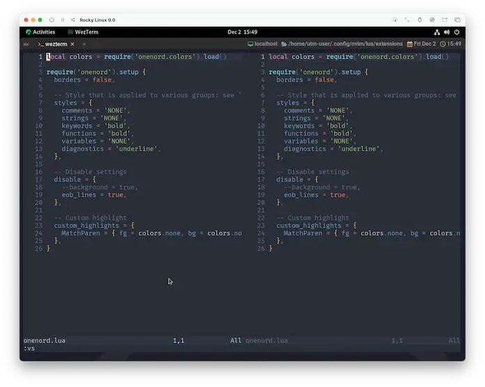 |
fade_nc
Fade non-current windows, making them more distinguishable
現在のウィンドウ以外をフェードさせ、区別しやすくする。
| true | false |
|---|---|
| 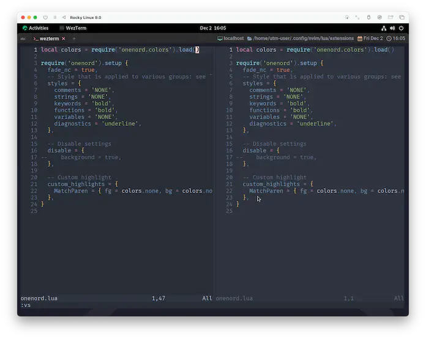 | 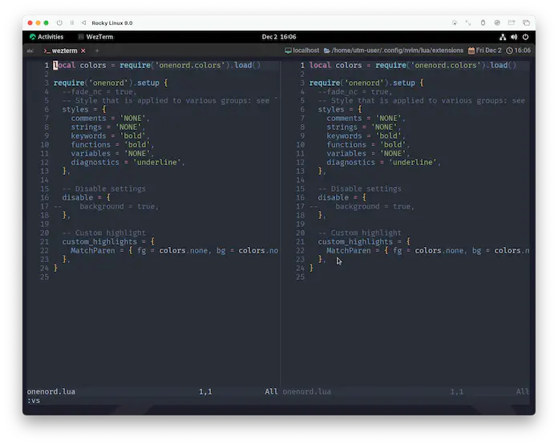 |
styles
Style that is applied to various groups: see `highlight-args` for options
様々なグループに適用されるスタイル: オプションは `:h highlight-args` を参照してください。
-- 以下はデフォルト値です。
styles = {
comments = "NONE",
strings = "NONE",
keywords = "NONE",
functions = "NONE",
variables = "NONE",
diagnostics = "underline",
},
| bold | NONE |
|---|---|
| 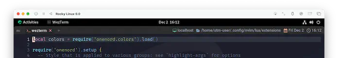 | 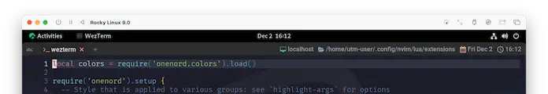 |
disable
background
Disable setting the background color
背景色の設定を無効にします。
これをtrueとして無効化すると、ターミナルの背景色やアルファチャンネル値がそのまま反映されます。
| true | false |
|---|---|
| 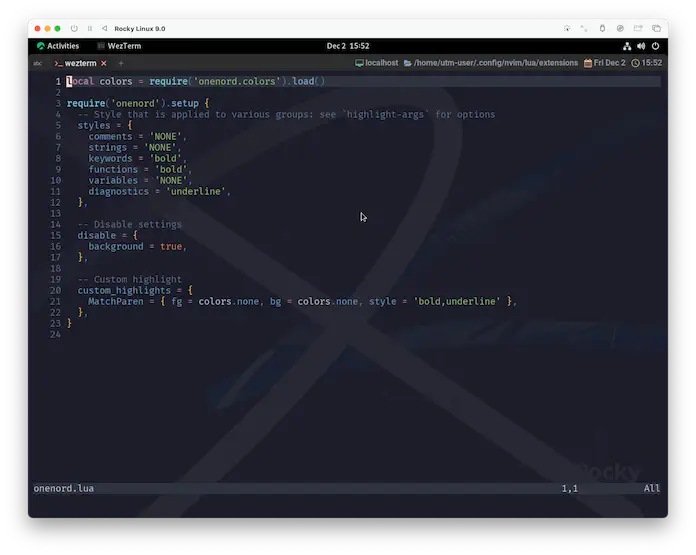 | 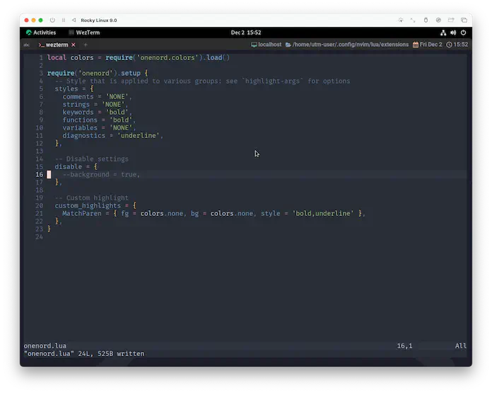 |
cursorline
Disable the cursorline
カーソルラインを無効にします。
eob_lines
Hide the end-of-buffer lines
バッファ終端行を隠します。
...これちょっと何かわからなかった...😿
inverse
Inverse highlight for different groups
グループごとにハイライトを反転させます。
custom_highlights
Overwrite default highlight groups
デフォルトのハイライトグループを上書きします。
| customize | none |
|---|---|
| 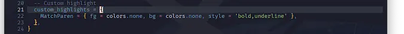 | 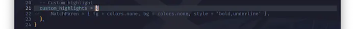 |
ちょっと見えにくいかな...。上の例では}です。
custom_colors
Overwrite default colors
デフォルトの色を上書きします。
まとめ
ここまでやっただけでも見違えるような変身っぷりですね❗
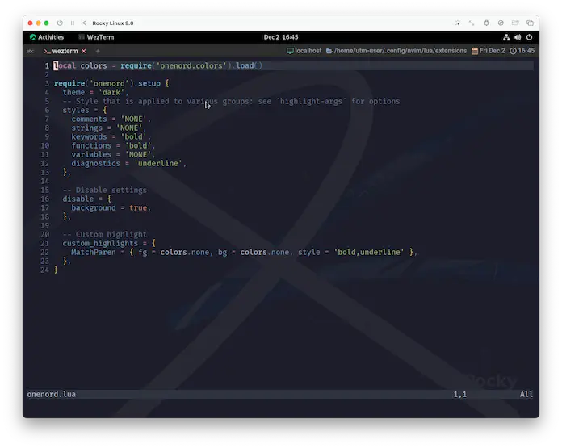
前のページとの比較ではさらに変化がわかりやすいです。
| default | nvim-treesitter |
|---|---|
 |  |
| onenord.nvim |
|---|
| 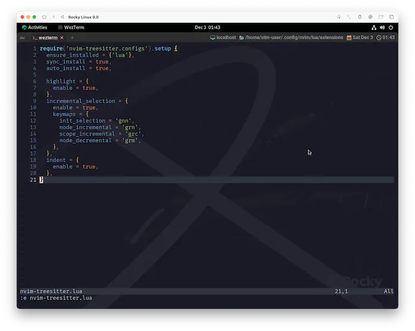 |